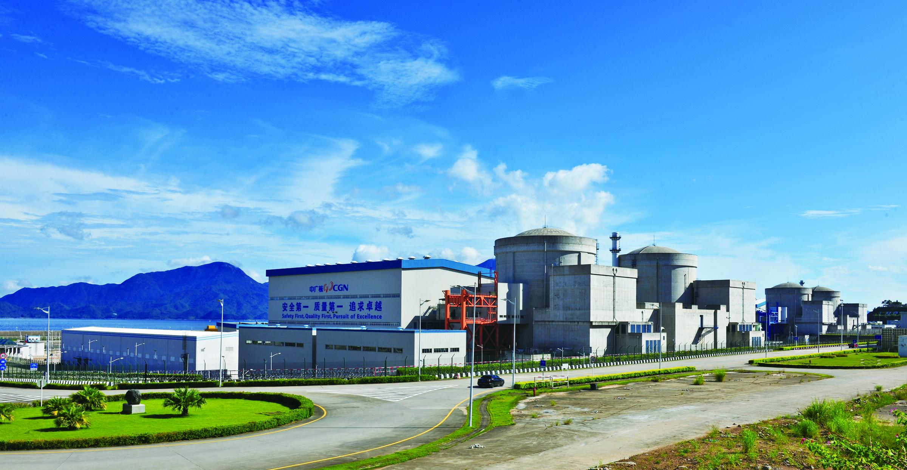

地理位置
中国广东省汕头市。
堆形与数量
4台压水堆核电机组。
发电基本原理
岭澳核电厂采用AP1000型技术，具有更高的安全性和经济性，其发电过程包括以下几个关键环节：
- 反应堆： 核燃料在反应堆内通过核裂变释放大量热能，加热冷却剂并通过蒸汽发生器传递热量给二回路。
- 蒸汽发生器： 在蒸汽发生器内，冷却剂将热量传递给二回路的水，二回路水被加热成蒸汽，推动汽轮机发电。
- 冷却系统： 蒸汽冷却后通过冷凝器排放热量，形成三回路循环。
功用与贡献
岭澳核电厂自投入商业运营以来，持续为广东及周边地区提供了稳定、安全、清洁的电力，极大地优化了当地的能源结构。作为我国重要的清洁能源基地，岭澳核电厂不仅显著减少了碳排放，还降低了对化石能源的依赖，每年减少约1000万吨二氧化碳排放，等同于每年种植约500万棵树。此外，岭澳核电厂的稳定运行提升了广东省的能源安全，缓解了电力需求与供给之间的压力，保障了电网的稳定运行。核电厂的运营还创造了大量就业机会，带动了周边产业的发展，进一步促进了地区经济的增长。作为中国首个引进西屋公司AP1000技术的核电项目，岭澳核电厂在技术创新方面也取得了显著突破，其安全、可靠的运行标志着中国在先进核电技术应用方面的不断进步。岭澳核电厂的成功运行不仅为能源供应和环保事业做出了贡献，也为我国核电技术的发展和能源转型提供了宝贵经验。
